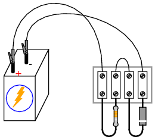
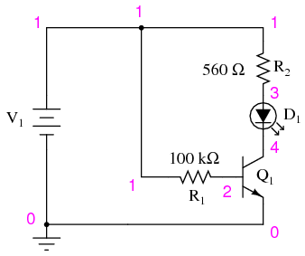
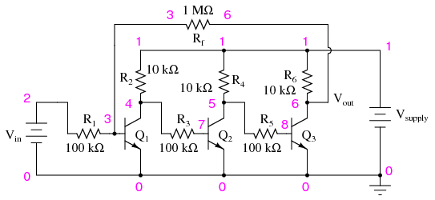

A semiconductor device is one made of silicon or any number of other specially prepared materials designed to exploit the unique properties of electrons in a crystal lattice, where electrons are not as free to move as in a conductor, but are far more mobile than in an insulator. A discrete device is one contained in its own package, not built on a common semiconductor substrate with other components, as is the case with ICs, or integrated circuits. Thus, "discrete semiconductor circuits" are circuits built out of individual semiconductor components, connected together on some kind of circuit board or terminal strip. These circuits employ all the components and concepts explored in the previous chapters, so a firm comprehension of DC and AC electricity is essential before embarking on these experiments.
Just for fun, one circuit is included in this section using a vacuum tube for amplification instead of a semiconductor transistor. Before the advent of transistors, "vacuum tubes" were the workhorses of the electronics industry: used to make rectifiers, amplifiers, oscillators, and many other circuits. Though now considered obsolete for most purposes, there are still some applications for vacuum tubes, and it can be fun building and operating circuits using these devices.
PARTS AND MATERIALS
A power transformer is specified, but any iron-core inductor will suffice, even the home-made inductor or transformer from the AC experiments chapter!
The diode need not be an exact model 1N4001. Any of the "1N400X" series of rectifying diodes are suitable for the task, and they are quite easy to obtain.
I recommend household light switches for their low cost and durability.
CROSS-REFERENCES
Lessons In Electric Circuits, Volume 1, chapter 16: "RC and L/R Time Constants"
Lessons In Electric Circuits, Volume 3, chapter 3: "Diodes and Rectifiers"
LEARNING OBJECTIVES
SCHEMATIC DIAGRAM
ILLUSTRATION
INSTRUCTIONS
When assembling the circuit, be very careful of the diode's orientation. The cathode end of the diode (the end marked with a single band) must face the positive (+) side of the battery. The diode should be reverse-biased and nonconducting with switch #1 in the "on" position. Use the high-voltage (120 V) winding of the transformer for the inductor coil. The primary winding of a step-down transformer has more inductance than the secondary winding, and will give a greater lamp-flashing effect.
Set switch #2 to the "off" position. This disconnects the diode from the circuit so that it has no effect. Quickly close and open (turn "on" and then "off") switch #1. When that switch is opened, the neon bulb will flash from the effect of inductive "kickback." Rapid current decrease caused by the switch's opening causes the inductor to create a large voltage drop as it attempts to keep current at the same magnitude and going in the same direction.
Inductive kickback is detrimental to switch contacts, as it causes excessive arcing whenever they are opened. In this circuit, the neon lamp actually diminishes the effect by providing an alternate current path for the inductor's current when the switch opens, dissipating the inductor's stored energy harmlessly in the form of light and heat. However, there is still a fairly high voltage dropped across the opening contacts of switch #1, causing undue arcing and shortened switch life.
If switch #2 is closed (turned "on"), the diode will now be a part of the circuit. Quickly close and open switch #1 again, noting the difference in circuit behavior. This time, the neon lamp does not flash. Connect a voltmeter across the inductor to verify that the inductor is still receiving full battery voltage with switch #1 closed. If the voltmeter registers only a small voltage with switch #1 "on," the diode is probably connected backward, creating a short-circuit.
PARTS AND MATERIALS
The diode need not be an exact model 1N4001. Any of the "1N400X" series of rectifying diodes are suitable for the task, and they are quite easy to obtain.
See the AC experiments chapter for detailed instructions on building the "audio detector" listed here. If you haven't built one already, you're missing a simple and valuable tool for experimentation.
A 0.1 µF capacitor is specified for "coupling" the audio detector to the circuit, so that only AC reaches the detector circuit. This capacitor's value is not critical. I've used capacitors ranging from 0.27 µF to 0.015 µF with success. Lower capacitor values attenuate low-frequency signals to a greater degree, resulting in less sound intensity from the headphones, so use a greater-value capacitor value if you experience difficulty hearing the tone(s).
CROSS-REFERENCES
Lessons In Electric Circuits, Volume 3, chapter 3: "Diodes and Rectifiers"
LEARNING OBJECTIVES
SCHEMATIC DIAGRAM
ILLUSTRATION
INSTRUCTIONS
Connect the motor to the low-voltage AC power supply through the rectifying diode as shown. The diode only allows current to pass through during one half-cycle of a full positive-and-negative cycle of power supply voltage, eliminating one half-cycle from ever reaching the motor. As a result, the motor only "sees" current in one direction, albeit a pulsating current, allowing it to spin in one direction.
Take a jumper wire and short past the diode momentarily, noting the effect on the motor's operation:

As you can see, permanent-magnet "DC" motors do not function well on alternating current. Remove the temporary jumper wire and reverse the diode's orientation in the circuit. Note the effect on the motor.
Measure DC voltage across the motor like this:
Then, measure AC voltage across the motor as well:
Most digital multimeters do a good job of discriminating AC from DC voltage, and these two measurements show the DC average and AC "ripple" voltages, respectively of the power "seen" by the motor. Ripple voltage is the varying portion of the voltage, interpreted as an AC quantity by measurement equipment although the voltage waveform never actually reverses polarity. Ripple may be envisioned as an AC signal superimposed on a steady DC "bias" or "offset" signal. Compare these measurements of DC and AC with voltage measurements taken across the motor while powered by a battery:
Batteries give very "pure" DC power, and as a result there should be very little AC voltage measured across the motor in this circuit. Whatever AC voltage is measured across the motor is due to the motor's pulsating current draw as the brushes make and break contact with the rotating commutator bars. This pulsating current causes pulsating voltages to be dropped across any stray resistances in the circuit, resulting in pulsating voltage "dips" at the motor terminals.
A qualitative assessment of ripple voltage may be obtained by using the sensitive audio detector described in the AC experiments chapter (the same device described as a "sensitive voltage detector" in the DC experiments chapter). Turn the detector's sensitivity down for low volume, and connect it across the motor terminals through a small (0.1 µF) capacitor, like this:
The capacitor acts as a high-pass filter, blocking DC voltage from reaching the detector and allowing easier "listening" of the remaining AC voltage. This is the exact same technique used in oscilloscope circuitry for "AC coupling," where DC signals are blocked from viewing by a series-connected capacitor. With a battery powering the motor, the ripple should sound like a high-pitched "buzz" or "whine." Try replacing the battery with the AC power supply and rectifying diode, "listening" with the detector to the low-pitched "buzz" of the half-wave rectified power:
COMPUTER SIMULATION
Schematic with SPICE node numbers:
Netlist (make a text file containing the following text, verbatim):
Halfwave rectifier v1 1 0 sin(0 8.485 60 0 0) rload 2 0 10k d1 1 2 mod1 .model mod1 d .tran .5m 25m .plot tran v(1,0) v(2,0) .end
This simulation plots the input voltage as a sine wave and the output voltage as a series of "humps" corresponding to the positive half-cycles of the AC source voltage. The dynamics of a DC motor are far too complex to be simulated using SPICE, unfortunately.
AC source voltage is specified as 8.485 instead of 6 volts because SPICE understands AC voltage in terms of peak value only. A 6 volt RMS sine-wave voltage is actually 8.485 volts peak. In simulations where the distinction between RMS and peak value isn't relevant, I will not bother with an RMS-to-peak conversion like this. To be truthful, the distinction is not terribly important in this simulation, but I discuss it here for your edification.
PARTS AND MATERIALS
It is essential for this experiment that the low-voltage AC power supply be equipped with a center tap. A transformer with a non-tapped secondary winding simply will not work for this circuit.
The diodes need not be exact model 1N4001 units. Any of the "1N400X" series of rectifying diodes are suitable for the task, and they are quite easy to obtain.
CROSS-REFERENCES
Lessons In Electric Circuits, Volume 3, chapter 3: "Diodes and Rectifiers"
LEARNING OBJECTIVES
SCHEMATIC DIAGRAM
ILLUSTRATION
INSTRUCTIONS
This rectifier circuit is called full-wave because it makes use of the entire waveform, both positive and negative half-cycles, of the AC source voltage in powering the DC load. As a result, there is less "ripple" voltage seen at the load. The RMS (Root-Mean-Square) value of the rectifier's output is also greater for this circuit than for the half-wave rectifier.
Use a voltmeter to measure both the DC and AC voltage delivered to the motor. You should notice the advantages of the full-wave rectifier immediately by the greater DC and lower AC indications as compared to the last experiment.
An experimental advantage of this circuit is the ease of which it may be "de-converted" to a half-wave rectifier: simply disconnect the short jumper wire connecting the two diodes' cathode ends together on the terminal strip. Better yet, for quick comparison between half and full-wave rectification, you may add a switch in the circuit to open and close this connection at will:
With the ability to quickly switch between half- and full-wave rectification, you may easily perform qualitative comparisons between the two different operating modes. Use the audio signal detector to "listen" to the ripple voltage present between the motor terminals for half-wave and full-wave rectification modes, noting both the intensity and the quality of the tone. Remember to use a coupling capacitor in series with the detector so that it only receives the AC "ripple" voltage and not DC voltage:
COMPUTER SIMULATION
Schematic with SPICE node numbers:
Netlist (make a text file containing the following text, verbatim):
Fullwave center-tap rectifier v1 1 0 sin(0 8.485 60 0 0) v2 0 3 sin(0 8.485 60 0 0) rload 2 0 10k d1 1 2 mod1 d2 3 2 mod1 .model mod1 d .tran .5m 25m .plot tran v(1,0) v(2,0) .end
PARTS AND MATERIALS
CROSS-REFERENCES
Lessons In Electric Circuits, Volume 3, chapter 3: "Diodes and Rectifiers"
LEARNING OBJECTIVES
SCHEMATIC DIAGRAM
ILLUSTRATION
INSTRUCTIONS
This circuit provides full-wave rectification without the necessity of a center-tapped transformer. In applications where a center-tapped, or split-phase, source is unavailable, this is the only practical method of full-wave rectification.
In addition to requiring more diodes than the center-tap circuit, the full-wave bridge suffers a slight performance disadvantage as well: the additional voltage drop caused by current having to go through two diodes in each half-cycle rather than through only one. With a low-voltage source such as the one you're using (6 volts RMS), this disadvantage is easily measured. Compare the DC voltage reading across the motor terminals with the reading obtained from the last experiment, given the same AC power supply and the same motor.
COMPUTER SIMULATION
Schematic with SPICE node numbers:
Netlist (make a text file containing the following text, verbatim):
Fullwave bridge rectifier v1 1 0 sin(0 8.485 60 0 0) rload 2 3 10k d1 3 1 mod1 d2 1 2 mod1 d3 3 0 mod1 d4 0 2 mod1 .model mod1 d .tran .5m 25m .plot tran v(1,0) v(2,3) .end
PARTS AND MATERIALS
A bridge rectifier "pack" is highly recommended over constructing a bridge rectifier circuit from individual diodes, because such "packs" are made to bolt onto a metal heat sink. A metal box is recommended over a plastic box for its ability to function as a heat sink for the rectifier.
A larger capacitor value is fine to use in this experiment, so long as its working voltage is high enough. To be safe, choose a capacitor with a working voltage rating at least twice the RMS AC voltage output of the low-voltage AC power supply.
High-wattage 12-volt lamps may be purchased from recreational vehicle (RV) and boating supply stores. Common sizes are 25 watt and 50 watt. This lamp will be used as a "heavy" load for the power supply.
CROSS-REFERENCES
Lessons In Electric Circuits, Volume 2, chapter 8: "Filters"
LEARNING OBJECTIVES
SCHEMATIC DIAGRAM
ILLUSTRATION
INSTRUCTIONS
This experiment involves constructing a rectifier and filter circuit for attachment to the low-voltage AC power supply constructed earlier. With this device, you will have a source of low-voltage, DC power suitable as a replacement for a battery in battery-powered experiments. If you would like to make this device its own, self-contained 120VAC/DC power supply, you may add all the componentry of the low-voltage AC supply to the "AC in" side of this circuit: a transformer, power cord, and plug. Even if you don't choose to do this, I recommend using a metal box larger than necessary to provide room for additional voltage regulation circuitry you might choose to add to this project later.
The bridge rectifier unit should be rated for a current at least as high as the transformer's secondary winding is rated for, and for a voltage at least twice as high as the RMS voltage of the transformer's output (this allows for peak voltage, plus an additional safety margin). The Radio Shack rectifier specified in the parts list is rated for 25 amps and 50 volts, more than enough for the output of the low-voltage AC power supply specified in the AC experiments chapter.
Rectifier units of this size are often equipped with "quick-disconnect" terminals. Complementary "quick-disconnect" lugs are sold that crimp onto the bare ends of wire. This is the preferred method of terminal connection. You may solder wires directly to the lugs of the rectifier, but I recommend against direct soldering to any semiconductor component for two reasons: possible heat damage during soldering, and difficulty of replacing the component in the event of failure.
Semiconductor devices are more prone to failure than most of the components covered in these experiments thus far, and so if you have any intent of making a circuit permanent, you should build it to be maintained. "Maintainable construction" involves, among other things, making all delicate components replaceable. It also means making "test points" accessible to meter probes throughout the circuit, so that troubleshooting may be executed with a minimum of inconvenience. Terminal strips inherently provide test points for taking voltage measurements, and they also allow for easy disconnection of wires without sacrificing connection durability.
Bolt the rectifier unit to the inside of the metal box. The box's surface area will act as a radiator, keeping the rectifier unit cool as it passes high currents. Any metal radiator surface designed to lower the operating temperature of an electronic component is called a heat sink. Semiconductor devices in general are prone to damage from overheating, so providing a path for heat transfer from the device(s) to the ambient air is very important when the circuit in question may handle large amounts of power.
A capacitor is included in the circuit to act as a filter to reduce ripple voltage. Make sure that you connect the capacitor properly across the DC output terminals of the rectifier, so that the polarities match. Being an electrolytic capacitor, it is sensitive to damage by polarity reversal. In this circuit especially, where the internal resistance of the transformer and rectifier are low and the short-circuit current consequently is high, the potential for damage is great. Warning: a failed capacitor in this circuit will likely explode with alarming force!
After the rectifier/filter circuit is built, connect it to the low-voltage AC power supply like this:
Measure the AC voltage output by the low-voltage power supply. Your meter should indicate approximately 6 volts if the circuit is connected as shown. This voltage measurement is the RMS voltage of the AC power supply.
Now, switch your multimeter to the DC voltage function and measure the DC voltage output by the rectifier/filter circuit. It should read substantially higher than the RMS voltage of the AC input measured before. The filtering action of the capacitor provides a DC output voltage equal to the peak AC voltage, hence the greater voltage indication:
Measure the AC ripple voltage magnitude with a digital voltmeter set to AC volts (or AC millivolts). You should notice a much smaller ripple voltage in this circuit than what was measured in any of the unfiltered rectifier circuits previously built. Feel free to use your audio detector to "listen" to the AC ripple voltage output by the rectifier/filter unit. As usual, connect a small "coupling" capacitor in series with the detector so that it does not respond to the DC voltage, but only the AC ripple. Very little sound should be heard.
After taking unloaded AC ripple voltage measurements, connect the 25 watt light bulb to the output of the rectifier/filter circuit like this:
Re-measure the ripple voltage present between the rectifier/filter unit's "DC out" terminals. With a heavy load, the filter capacitor becomes discharged between rectified voltage peaks, resulting in greater ripple than before:
If less ripple is desired under heavy-load conditions, a larger capacitor may be used, or a more complex filter circuit may be built using two capacitors and an inductor:
If you choose to build such a filter circuit, be sure to use an iron-core inductor for maximum inductance, and one with thick enough wire to safely handle the full rated current of power supply. Inductors used for the purpose of filtering are sometimes referred to as chokes, because they "choke" AC ripple voltage from getting to the load. If a suitable choke cannot be obtained, the secondary winding of a step-down power transformer like the type used to step 120 volts AC down to 12 or 6 volts AC in the low-voltage power supply may be used. Leave the primary (120 volt) winding open:
COMPUTER SIMULATION
Schematic with SPICE node numbers:
Netlist (make a text file containing the following text, verbatim):
Fullwave bridge rectifier v1 1 0 sin(0 8.485 60 0 0) rload 2 3 10k c1 2 3 1000u ic=0 d1 3 1 mod1 d2 1 2 mod1 d3 3 0 mod1 d4 0 2 mod1 .model mod1 d .tran .5m 25m .plot tran v(1,0) v(2,3) .end
You may decrease the value of Rload in the simulation from 10 kΩ to some lower value to explore the effects of loading on ripple voltage. As it is with a 10 kΩ load resistor, the ripple is undetectable on the waveform plotted by SPICE.
PARTS AND MATERIALS
Any low-voltage zener diode is appropriate for this experiment. The 1N4742 model listed here (zener voltage = 12 volts) is but one suggestion. Whatever diode model you choose, I highly recommend one with a zener voltage rating greater than the voltage of a single battery, for maximum learning experience. It is important that you see how a zener diode functions when exposed to a voltage less than its breakdown rating.
CROSS-REFERENCES
Lessons In Electric Circuits, Volume 3, chapter 3: "Diodes and Rectifiers"
LEARNING OBJECTIVES
SCHEMATIC DIAGRAM
ILLUSTRATION

INSTRUCTIONS
Build this simple circuit, being sure to connect the diode in "reverse-bias" fashion (cathode positive and anode negative), and measure the voltage across the diode with one battery as a power source. Record this voltage drop for future reference. Also, measure and record the voltage drop across the 10 kΩ resistor.
Modify the circuit by connecting two 6-volt batteries in series, for 12 volts total power source voltage. Re-measure the diode's voltage drop, as well as the resistor's voltage drop, with a voltmeter:
Connect three, then four 6-volt batteries together in series, forming an 18 volt and 24 volt power source, respectively. Measure and record the diode's and resistor's voltage drops for each new power supply voltage. What do you notice about the diode's voltage drop for these four different source voltages? Do you see how the diode voltage never exceeds a level of 12 volts? What do you notice about the resistor's voltage drop for these four different source voltage levels?
Zener diodes are frequently used as voltage regulating devices, because they act to clamp the voltage drop across themselves at a predetermined level. Whatever excess voltage is supplied by the power source becomes dropped across the series resistor. However, it is important to note that a zener diode cannot make up for a deficiency in source voltage. For instance, this 12-volt zener diode does not drop 12 volts when the power source is only 6 volts strong. It is helpful to think of a zener diode as a voltage limiter: establishing a maximum voltage drop, but not a minimum voltage drop.
COMPUTER SIMULATION
Schematic with SPICE node numbers:
Netlist (make a text file containing the following text, verbatim):
Zener diode v1 1 0 r1 1 2 10k d1 0 2 mod1 .model mod1 d bv=12 .dc v1 18 18 1 .print dc v(2,0) .end
A zener diode may be simulated in SPICE with a normal diode, the reverse breakdown parameter (bv=12) set to the desired zener breakdown voltage.
PARTS AND MATERIALS
Resistor values are not critical for this experiment. Neither is the particular light emitting diode (LED) selected.
CROSS-REFERENCES
Lessons In Electric Circuits, Volume 3, chapter 4: "Bipolar Junction Transistors"
LEARNING OBJECTIVES
SCHEMATIC DIAGRAM
ILLUSTRATION
INSTRUCTIONS
The red wire shown in the diagram (the one terminating in an arrowhead, connected to one end of the 100 kΩ resistor) is intended to remain loose, so that you may touch it momentarily to other points in the circuit.
If you touch the end of the loose wire to any point in the circuit more positive than it, such as the positive side of the DC power source, the LED should light up. It takes 20 mA to fully illuminate a standard LED, so this behavior should strike you as interesting, because the 100 kΩ resistor to which the loose wire is attached restricts current through it to a far lesser value than 20 mA. At most, a total voltage of 12 volts across a 100 kΩ resistance yields a current of only 0.12 mA, or 120 µA! The connection made by your touching the wire to a positive point in the circuit conducts far less current than 1 mA, yet through the amplifying action of the transistor, is able to control a much greater current through the LED.
Try using an ammeter to connect the loose wire to the positive side of the power source, like this:
You may have to select the most sensitive current range on the meter to measure this small flow. After measuring this controlling current, try measuring the LED's current (the controlled current) and compare magnitudes. Don't be surprised if you find a ratio in excess of 200 (the controlled current 200 times as great as the controlling current)!
As you can see, the transistor is acting as a kind of electrically-controlled switch, switching current on and off to the LED at the command of a much smaller current signal conducted through its base terminal.
To further illustrate just how miniscule the controlling current is, remove the loose wire from the circuit and try "bridging" the unconnected end of the 100 kΩ resistor to the power source's positive pole with two fingers of one hand. You may need to wet the ends of those fingers to maximize conductivity:
Try varying the contact pressure of your fingers with these two points in the circuit to vary the amount of resistance in the controlling current's path. Can you vary the brightness of the LED by doing so? What does this indicate about the transistor's ability to act as more than just a switch; i.e. as a variable
COMPUTER SIMULATION
Schematic with SPICE node numbers:

Netlist (make a text file containing the following text, verbatim):
Transistor as a switch v1 1 0 r1 1 2 100k r2 1 3 560 d1 3 4 mod2 q1 4 2 0 mod1 .model mod1 npn bf=200 .model mod2 d is=1e-28 .dc v1 12 12 1 .print dc v(2,0) v(4,0) v(1,2) v(1,3) v(3,4) .end
In this simulation, the voltage drop across the 560 Ω resistor v(1,3) turns out to be 10.26 volts, indicating a LED current of 18.32 mA by Ohm's Law (I=E/R). R1's voltage drop (voltage between nodes 1 and 2) ends up being 11.15 volts, which across 100 kΩ gives a current of only 111.5 µA. Obviously, a very small current is exerting control over a much larger current in this circuit.
In case you were wondering, the is=1e-28 parameter in the diode's .model line is there to make the diode act more like an LED with a higher forward voltage drop.
PARTS AND MATERIALS
The particular junction field-effect transistor, or JFET, model used in this experiment is not critical. P-channel JFETs are also okay to use, but are not as popular as N-channel transistors.
Beware that not all transistors share the same terminal designations, or pinouts, even if they share the same physical appearance. This will dictate how you connect the transistors together and to other components, so be sure to check the manufacturer's specifications (component datasheet), easily obtained from the manufacturer's website. Beware that it is possible for the transistor's package and even the manufacturer's datasheet to show incorrect terminal identification diagrams! Double-checking pin identities with your multimeter's "diode check" function is highly recommended. For details on how to identify junction field-effect transistor terminals using a multimeter, consult chapter 5 of the Semiconductor volume (volume III) of this book series.
CROSS-REFERENCES
Lessons In Electric Circuits, Volume 3, chapter 5: "Junction Field-Effect Transistors"
LEARNING OBJECTIVES
SCHEMATIC DIAGRAM
ILLUSTRATION
INSTRUCTIONS
This experiment is very similar to the previous experiment using a bipolar junction transistor (BJT) as a switching device to control current through an LED. In this experiment, a junction field-effect transistor is used instead, giving dramatically improved sensitivity.
Build this circuit and touch the loose wire end (the wire shown in red on the schematic diagram and in the illustration, connected to the 100 kΩ resistor) with your hand. Simply touching this wire will likely have an effect on the LED's status. This circuit makes a fine sensor of static electricity! Try scuffing your feet on a carpet and then touching the wire end if no effect on the light is seen yet.
For a more controlled test, touch the wire with one hand and alternately touch the positive (+) and negative (-) terminals of the battery with one finger of your other hand. Your body acts as a conductor (albeit a poor one), connecting the gate terminal of the JFET to either terminal of the battery as you touch them. Make note which terminal makes the LED turn on and which makes the LED turn off. Try to relate this behavior with what you've read about JFETs in chapter 5 of the Semiconductor volume.
The fact that a JFET is turned on and off so easily (requiring so little control current), as evidenced by full on-and-off control simply by conduction of a control current through your body, demonstrates how great of a current gain it has. With the BJT "switch" experiment, a much more "solid" connection between the transistor's gate terminal and a source of voltage was needed to turn it on. Not so with the JFET. In fact, the mere presence of static electricity can turn it on and off at a distance.
To further experiment with the effects of static electricity on this circuit, brush your hair with the plastic comb and then wave the comb near the transistor, watching the effect on the LED. The action of combing your hair with a plastic object creates a high static voltage between the comb and your body. The strong electric field produced between these two objects should be detectable by this circuit from a significant distance!
In case you're wondering why there is no 560 Ω "dropping" resistor to limit current through the LED, many small-signal JFETs tend to self-limit their controlled current to a level acceptable by LEDs. The model 2N3819, for example, has a typical saturated drain current (IDSS) of 10 mA and a maximum of 20 mA. Since most LEDs are rated at a forward current of 20 mA, there is no need for a dropping resistor to limit circuit current: the JFET does it intrinsically.
PARTS AND MATERIALS
If you don't have an audio detector already constructed, you can use a nice set of audio headphones (closed-cup style, that completely covers your ears) and a 120V/6V step-down transformer to build a sensitive audio detector without volume control or overvoltage protection, just for this experiment.
Connect these portions of the headphone stereo plug to the transformer's secondary (6 volt) winding:
Try both the series and the parallel connection schemes for the loudest sound.
If you haven't made an audio detector as outlined in both the DC and AC experiments chapters, you really should -- it is a valuable piece of test equipment for your collection.
CROSS-REFERENCES
Lessons In Electric Circuits, Volume 3, chapter 4: "Bipolar Junction Transistors"
LEARNING OBJECTIVES
SCHEMATIC DIAGRAM
ILLUSTRATION
INSTRUCTIONS
This circuit detects pulses of light striking the LED and converts them into relatively strong audio signals to be heard through the headphones. Forrest Mims teaches that LEDs have the ability to produce current when exposed to light, in a manner not unlike a semiconductor solar cell. [MIM] By itself, the LED does not produce enough electrical power to drive the audio detector circuit, so a transistor is used to amplify the LED's signals. If the LED is exposed to a pulsing source of light, a tone will be heard in the headphones.
Sources of light suitable for this experiment include fluorescent and neon lamps, which blink rapidly with the 60 Hz AC power energizing them. You may also try using bright sunlight for a steady light source, then waving your fingers in front of the LED. The rapidly passing shadows will cause the LED to generate pulses of voltage, creating a brief "buzzing" sound in the headphones.
LEDs serving as photo-detectors are narrow-band devices, responding to a narrow band of wavelengths close, but not identical, to that normally emitted. Infrared remote controls are a good illumination source for near-infrared LEDs employed as photo-sensors, producing a receiver sound. [MIM3]
With a little imagination, it is not difficult to grasp the concept of transmitting audio information -- such as music or speech -- over a beam of pulsing light. Given a suitable "transmitter" circuit to pulse an LED on and off with the positive and negative crests of an audio waveform from a microphone, the "receiver" circuit shown here would convert those light pulses back into audio signals. [MIM2]
PARTS AND MATERIALS
Beware that not all transistors share the same terminal designations, or pinouts, even if they share the same physical appearance. This will dictate how you connect the transistors together and to other components, so be sure to check the manufacturer's specifications (component datasheet), easily obtained from the manufacturer's website. Beware that it is possible for the transistor's package and even the manufacturer's datasheet to show incorrect terminal identification diagrams! Double-checking pin identities with your multimeter's "diode check" function is highly recommended. For details on how to identify bipolar transistor terminals using a multimeter, consult chapter 4 of the Semiconductor volume (volume III) of this book series.
CROSS-REFERENCES
Lessons In Electric Circuits, Volume 3, chapter 4: "Bipolar Junction Transistors"
LEARNING OBJECTIVES
SCHEMATIC DIAGRAM
ILLUSTRATION
INSTRUCTIONS
Again, beware that the transistor you select for this experiment may not have the same terminal designations shown here, and so the breadboard layout shown in the illustration may not be correct for you. In my illustrations, I show all TO-92 package transistors with terminals labeled "CBE": Collector, Base, and Emitter, from left to right. This is correct for the model 2N2222 transistor and some others, but not for all; not even for all NPN-type transistors! As usual, check with the manufacturer for details on the particular component(s) you choose for a project. With bipolar junction transistors, it is easy enough to verify terminal assignments with a multimeter.
The voltage follower is the safest and easiest transistor amplifier circuit to build. Its purpose is to provide approximately the same voltage to a load as what is input to the amplifier, but at a much greater current. In other words, it has no voltage gain, but it does have current gain.
Note that the negative (-) side of the power supply is shown in the schematic diagram to be connected to ground, as indicated by the symbol in the lower-left corner of the diagram. This does not necessarily represent a connection to the actual earth. What it means is that this point in the circuit -- and all points electrically common to it -- constitute the default reference point for all voltage measurements in the circuit. Since voltage is by necessity a quantity relative between two points, a "common" point of reference designated in a circuit gives us the ability to speak meaningfully of voltage at particular, single points in that circuit.
For example, if I were to speak of voltage at the base of the transistor (VB), I would mean the voltage measured between the transistor's base terminal and the negative side of the power supply (ground), with the red probe touching the base terminal and the black probe touching ground. Normally, it is nonsense to speak of voltage at a single point, but having an implicit reference point for voltage measurements makes such statements meaningful:
Build this circuit, and measure output voltage versus input voltage for several different potentiometer settings. Input voltage is the voltage at the potentiometer's wiper (voltage between the wiper and circuit ground), while output voltage is the load resistor voltage (voltage across the load resistor, or emitter voltage: between emitter and circuit ground). You should see a close correlation between these two voltages: one is just a little bit greater than the other (about 0.6 volts or so?), but a change in the input voltage gives almost equal change in the output voltage. Because the relationship between input change and output change is almost 1:1, we say that the AC voltage gain of this amplifier is nearly 1.
Not very impressive, is it? Now measure current through the base of the transistor (input current) versus current through the load resistor (output current). Before you break the circuit and insert your ammeter to take these measurements, consider an alternative method: measure voltage across the base and load resistors, whose resistance values are known. Using Ohm's Law, current through each resistor may be easily calculated: divide the measured voltage by the known resistance (I=E/R). This calculation is particularly easy with resistors of 1 kΩ value: there will be 1 milliamp of current for every volt of drop across them. For best precision, you may measure the resistance of each resistor rather than assume an exact value of 1 kΩ, but it really doesn't matter much for the purposes of this experiment. When resistors are used to take current measurements by "translating" a current into a corresponding voltage, they are often referred to as shunt resistors.
You should expect to find huge differences between input and output currents for this amplifier circuit. In fact, it is not uncommon to experience current gains well in excess of 200 for a small-signal transistor operating at low current levels. This is the primary purpose of a voltage follower circuit: to boost the current capacity of a "weak" signal without altering its voltage.
Another way of thinking of this circuit's function is in terms of impedance. The input side of this amplifier accepts a voltage signal without drawing much current. The output side of this amplifier delivers the same voltage, but at a current limited only by load resistance and the current-handling ability of the transistor. Cast in terms of impedance, we could say that this amplifier has a high input impedance (voltage dropped with very little current drawn) and a low output impedance (voltage dropped with almost unlimited current-sourcing capacity).
COMPUTER SIMULATION
Schematic with SPICE node numbers:
Netlist (make a text file containing the following text, verbatim):
Voltage follower v1 1 0 rpot1 1 2 5k rpot2 2 0 5k rbase 2 3 1k rload 4 0 1k q1 1 3 4 mod1 .model mod1 npn bf=200 .dc v1 12 12 1 .print dc v(2,0) v(4,0) v(2,3) .end
When this simulation is run through the SPICE program, it shows an input voltage of 5.937 volts and an output voltage of 5.095 volts, with an input current of 25.35 µA (2.535E-02 volts dropped across the 1 kΩ Rbase resistor). Output current is, of course, 5.095 mA, inferred from the output voltage of 5.095 volts dropped across a load resistance of exactly 1 kΩ. You may change the "potentiometer" setting in this circuit by adjusting the values of Rpot1 and Rpot2, always keeping their sum at 10 kΩ.
PARTS AND MATERIALS
CROSS-REFERENCES
Lessons In Electric Circuits, Volume 3, chapter 4: "Bipolar Junction Transistors"
LEARNING OBJECTIVES
SCHEMATIC DIAGRAM
ILLUSTRATION
INSTRUCTIONS
Build this circuit and measure output voltage (voltage measured between the transistor's collector terminal and ground) and input voltage (voltage measured between the potentiometer's wiper terminal and ground) for several position settings of the potentiometer. I recommend determining the output voltage range as the potentiometer is adjusted through its entire range of motion, then choosing several voltages spanning that output range to take measurements at. For example, if full rotation on the potentiometer drives the amplifier circuit's output voltage from 0.1 volts (low) to 11.7 volts (high), choose several voltage levels between those limits (1 volt, 3 volts, 5 volts, 7 volts, 9 volts, and 11 volts). Measuring the output voltage with a meter, adjust the potentiometer to obtain each of these predetermined voltages at the output, noting the exact figure for later reference. Then, measure the exact input voltage producing that output voltage, and record that voltage figure as well.
In the end, you should have a table of numbers representing several different output voltages along with their corresponding input voltages. Take any two pairs of voltage figures and calculate voltage gain by dividing the difference in output voltages by the difference in input voltages. For example, if an input voltage of 1.5 volts gives me an output voltage of 7.0 volts and an input voltage of 1.66 volts gives me an output voltage of 1.0 volt, the amplifier's voltage gain is (7.0 - 1.0)/(1.66 - 1.5), or 6 divided by 0.16: a gain ratio of 37.50.
You should immediately notice two characteristics while taking these voltage measurements: first, that the input-to-output effect is "reversed;" that is, an increasing input voltage results in a decreasing output voltage. This effect is known as signal inversion, and this kind of amplifier as an inverting amplifier. Secondly, this amplifier exhibits a very strong voltage gain: a small change in input voltage results in a large change in output voltage. This should stand in stark contrast to the "voltage follower" amplifier circuit discussed earlier, which had a voltage gain of about 1.
Common-emitter amplifiers are widely used due to their high voltage gain, but they are rarely used in as crude a form as this. Although this amplifier circuit works to demonstrate the basic concept, it is very susceptible to changes in temperature. Try leaving the potentiometer in one position and heating the transistor by grasping it firmly with your hand or heating it with some other source of heat such as an electric hair dryer (WARNING: be careful not to get it so hot that your plastic breadboard melts!). You may also explore temperature effects by cooling the transistor: touch an ice cube to its surface and note the change in output voltage.
When the transistor's temperature changes, its base-emitter diode characteristics change, resulting in different amounts of base current for the same input voltage. This in turn alters the controlled current through the collector terminal, thus affecting output voltage. Such changes may be minimized through the use of signal feedback, whereby a portion of the output voltage is "fed back" to the amplifier's input so as to have a negative, or canceling, effect on voltage gain. Stability is improved at the expense of voltage gain, a compromise solution, but practical nonetheless.
Perhaps the simplest way to add negative feedback to a common-emitter amplifier is to add some resistance between the emitter terminal and ground, so that the input voltage becomes divided between the base-emitter PN junction and the voltage drop across the new resistance:
Repeat the same voltage measurement and recording exercise with the 1.5 kΩ resistor installed, calculating the new (reduced) voltage gain. Try altering the transistor's temperature again and noting the output voltage for a steady input voltage. Does it change more or less than without the 1.5 kΩ resistor?
Another method of introducing negative feedback to this amplifier circuit is to "couple" the output to the input through a high-value resistor. Connecting a 1 MΩ resistor between the transistor's collector and base terminals works well:

Although this different method of feedback accomplishes the same goal of increased stability by diminishing gain, the two feedback circuits will not behave identically. Note the range of possible output voltages with each feedback scheme (the low and high voltage values obtained with a full sweep of the input voltage potentiometer), and how this differs between the two circuits.
COMPUTER SIMULATION
Schematic with SPICE node numbers:
Netlist (make a text file containing the following text, verbatim):
Common-emitter amplifier vsupply 1 0 dc 12 vin 3 0 rc 1 2 10k rb 3 4 100k q1 2 4 0 mod1 .model mod1 npn bf=200 .dc vin 0 2 0.05 .plot dc v(2,0) v(3,0) .end
This SPICE simulation sets up a circuit with a variable DC voltage source (vin) as the input signal, and measures the corresponding output voltage between nodes 2 and 0. The input voltage is varied, or "swept," from 0 to 2 volts in 0.05 volt increments. Results are shown on a plot, with the input voltage appearing as a straight line and the output voltage as a "step" figure where the voltage begins and ends level, with a steep change in the middle where the transistor is in its active mode of operation.
PARTS AND MATERIALS
CROSS-REFERENCES
Lessons In Electric Circuits, Volume 3, chapter 4: "Bipolar Junction Transistors"
LEARNING OBJECTIVES
SCHEMATIC DIAGRAM
ILLUSTRATION
INSTRUCTIONS
By connecting three common-emitter amplifier circuit together -- the collector terminal of the previous transistor to the base (resistor) of the next transistor -- the voltage gains of each stage compound to give a very high overall voltage gain. I recommend building this circuit without the 1 MΩ feedback resistor to begin with, to see for yourself just how high the unrestricted voltage gain is. You may find it impossible to adjust the potentiometer for a stable output voltage (that isn't saturated at full supply voltage or zero), the gain being so high.
Even if you can't adjust the input voltage fine enough to stabilize the output voltage in the active range of the last transistor, you should be able to tell that the output-to-input relationship is inverting; that is, the output tends to drive to a high voltage when the input goes low, and vice versa. Since any one of the common-emitter "stages" is inverting in itself, an even number of staged common-emitter amplifiers gives noninverting response, while an odd number of stages gives inverting. You may experience these relationships by measuring the collector-to-ground voltage at each transistor while adjusting the input voltage potentiometer, noting whether or not the output voltage increases or decreases with an increase in input voltage.
Connect the 1 MΩ feedback resistor into the circuit, coupling the collector of the last transistor to the base of the first. Since the overall response of this three-stage amplifier is inverting, the feedback signal provided through the 1 MΩ resistor from the output of the last transistor to the input of the first should be negative in nature. As such, it will act to stabilize the amplifier's response and minimize the voltage gain. You should notice the reduction in gain immediately by the decreased sensitivity of the output signal on input signal changes (changes in potentiometer position). Simply put, the amplifier isn't nearly as "touchy" as it was without the feedback resistor in place.
As with the simple common-emitter amplifier discussed in an earlier experiment, it is a good idea here to make a table of input versus output voltage figures with which you may calculate voltage gain.
Experiment with different values of feedback resistance. What effect do you think a decrease in feedback resistance have on voltage gain? What about an increase in feedback resistance? Try it and find out!
An advantage of using negative feedback to "tame" a high-gain amplifier circuit is that the resulting voltage gain becomes more dependent upon the resistor values and less dependent upon the characteristics of the constituent transistors. This is good, because it is far easier to manufacture consistent resistors than consistent transistors. Thus, it is easier to design an amplifier with predictable gain by building a staged network of transistors with an arbitrarily high voltage gain, then mitigate that gain precisely through negative feedback. It is this same principle that is used to make operational amplifier circuits behave so predictably.
This amplifier circuit is a bit simplified from what you will normally encounter in practical multi-stage circuits. Rarely is a pure common-emitter configuration (i.e. with no emitter-to-ground resistor) used, and if the amplifier's service is for AC signals, the inter-stage coupling is often capacitive with voltage divider networks connected to each transistor base for proper biasing of each stage. Radio-frequency amplifier circuits are often transformer-coupled, with capacitors connected in parallel with the transformer windings for resonant tuning.
COMPUTER SIMULATION
Schematic with SPICE node numbers:

Netlist (make a text file containing the following text, verbatim):
Multi-stage amplifier vsupply 1 0 dc 12 vin 2 0 r1 2 3 100k r2 1 4 10k q1 4 3 0 mod1 r3 4 7 100k r4 1 5 10k q2 5 7 0 mod1 r5 5 8 100k r6 1 6 10k q3 6 8 0 mod1 rf 3 6 1meg .model mod1 npn bf=200 .dc vin 0 2.5 0.1 .plot dc v(6,0) v(2,0) .end
This simulation plots output voltage against input voltage, and allows comparison between those variables in numerical form: a list of voltage figures printed to the left of the plot. You may calculate voltage gain by taking any two analysis points and dividing the difference in output voltages by the difference in input voltages, just like you do for the real circuit.
Experiment with different feedback resistance values (rf) and see the impact on overall voltage gain. Do you notice a pattern? Here's a hint: the overall voltage gain may be closely approximated by using the resistance figures of r1 and rf, without reference to any other circuit component!
PARTS AND MATERIALS
Small signal transistors are recommended so as to be able to experience "thermal runaway" in the latter portion of the experiment. Larger "power" transistors may not exhibit the same behavior at these low current levels. However, any pair of identical NPN transistors may be used to build a current mirror.
Beware that not all transistors share the same terminal designations, or pinouts, even if they share the same physical appearance. This will dictate how you connect the transistors together and to other components, so be sure to check the manufacturer's specifications (component datasheet), easily obtained from the manufacturer's website. Beware that it is possible for the transistor's package and even the manufacturer's datasheet to show incorrect terminal identification diagrams! Double-checking pin identities with your multimeter's "diode check" function is highly recommended. For details on how to identify bipolar transistor terminals using a multimeter, consult chapter 4 of the Semiconductor volume (volume III) of this book series.
CROSS-REFERENCES
Lessons In Electric Circuits, Volume 3, chapter 4: "Bipolar Junction Transistors"
LEARNING OBJECTIVES
SCHEMATIC DIAGRAM
ILLUSTRATION
INSTRUCTIONS
A current mirror may be thought of as an adjustable current regulator, the current limit being easily set by a single resistance. It is a rather crude current regulator circuit, but one that finds wide use due to its simplicity. In this experiment, you will get the opportunity to build one of these circuits, explore its current-regulating properties, and also experience some of its practical limitations firsthand.
Build the circuit as shown in the schematic and illustration. You will have one extra 1.5 kΩ fixed-value resistor from the parts specified in the parts list. You will be using it in the last part of this experiment.
The potentiometer sets the amount of current through transistor Q1. This transistor is connected to act as a simple diode: just a PN junction. Why use a transistor instead of a regular diode? Because it is important to match the junction characteristics of these two transistors when using them in a current mirror circuit. Voltage dropped across the base-emitter junction of Q1 is impressed across the base-emitter junction of the other transistor, Q2, causing it to turn "on" and likewise conduct current.
Since voltage across the two transistors' base-emitter junctions is the same -- the two junction pairs being connected in parallel with each other -- so should the current be through their base terminals, assuming identical junction characteristics and identical junction temperatures. Matched transistors should have the same β ratios, as well, so equal base currents means equal collector currents. The practical result of all this is Q2's collector current mimicking whatever current magnitude has been established through the collector of Q1 by the potentiometer. In other words, current through Q2 mirrors the current through Q1.
Changes in load resistance (resistance connecting the collector of Q2 to the positive side of the battery) have no effect on Q1's current, and consequently have no effect upon the base-emitter voltage or base current of Q2. With a constant base current and a nearly constant β ratio, Q2 will drop as much or as little collector-emitter voltage as necessary to hold its collector (load) current constant. Thus, the current mirror circuit acts to regulate current at a value set by the potentiometer, without regard to load resistance.
Well, that is how it is supposed to work, anyway. Reality isn't quite so simple, as you are about to see. In the circuit diagram shown, the load circuit of Q2 is completed to the positive side of the battery through an ammeter, for easy current measurement. Rather than solidly connect the ammeter's black probe to a definite point in the circuit, I've marked five test points, TP1 through TP5, for you to touch the black test probe to while measuring current. This allows you to quickly and effortlessly change load resistance: touching the probe to TP1 results in practically no load resistance, while touching it to TP5 results in approximately 14.5 kΩ of load resistance.
To begin the experiment, touch the test probe to TP4 and adjust the potentiometer through its range of travel. You should see a small, changing current indicated by your ammeter as you move the potentiometer mechanism: no more than a few milliamps. Leave the potentiometer set to a position giving a round number of milliamps and move the meter's black test probe to TP3. The current indication should be very nearly the same as before. Move the probe to TP2, then TP1. Again, you should see a nearly unchanged amount of current. Try adjusting the potentiometer to another position, giving a different current indication, and touch the meter's black probe to test points TP1 through TP4, noting the stability of the current indications as you change load resistance. This demonstrates the current regulating behavior of this circuit.
You should note that the current regulation isn't perfect. Despite regulating the current at nearly the value for load resistances between 0 and 4.5 kΩ, there is some variation over this range. The regulation may be much worse if load resistance is allowed to rise too high. Try adjusting the potentiometer so that maximum current is obtained, as indicated with the ammeter test probe connected to TP1. Leaving the potentiometer at that position, move the meter probe to TP2, then TP3, then TP4, and finally TP5, noting the meter's indication at each connection point. The current should be regulated at a nearly constant value until the meter probe is moved to the last test point, TP5. There, the current indication will be substantially lower than at the other test points. Why is this? Because too much load resistance has been inserted into Q2's circuit. Simply put, Q2 cannot "turn on" any more than it already has, to maintain the same amount of current with this great a load resistance as with lesser load resistances.
This phenomenon is common to all current-regulator circuits: there is a limited amount of resistance a current regulator can handle before it saturates. This stands to reason, as any current regulator circuit capable of supplying a constant amount of current through any load resistance imaginable would require an unlimited source of voltage to do it! Ohm's Law (E=IR) dictates the amount of voltage needed to push a given amount of current through a given amount of resistance, and with only 12 volts of power supply voltage at our disposal, a finite limit of load current and load resistance definitely exists for this circuit. For this reason, it may be helpful to think of current regulator circuits as being current limiter circuits, for all they can really do is limit current to some maximum value.
An important caveat for current mirror circuits in general is that of equal temperature between the two transistors. The current "mirroring" taking place between the two transistors' collector circuits depends on the base-emitter junctions of those two transistors having the exact same properties. As the "diode equation" describes, the voltage/current relationship for a PN junction strongly depends on junction temperature. The hotter a PN junction is, the more current it will pass for a given amount of voltage drop. If one transistor should become hotter than the other, it will pass more collector current than the other, and the circuit will no longer "mirror" current as expected. When building a real current mirror circuit using discrete transistors, the two transistors should be epoxy-glued together (back-to-back) so that they remain at approximately the same temperature.
To illustrate this dependence on equal temperature, try grasping one transistor between your fingers to heat it up. What happens to the current through the load resistors as the transistor's temperature increases? Now, let go of the transistor and blow on it to cool it down to ambient temperature. Grasp the other transistor between your fingers to heat it up. What does the load current do now?
In this next phase of the experiment, we will intentionally allow one of the transistors to overheat and note the effects. To avoid damaging a transistor, this procedure should be conducted no longer than is necessary to observe load current begin to "run away." To begin, adjust the potentiometer for minimum current. Next, replace the 10 kΩ Rlimit resistor with a 1.5 kΩ resistor. This will allow a higher current to pass through Q1, and consequently through Q2 as well.
Place the ammeter's black probe on TP1 and observe the current indication. Move the potentiometer in the direction of increasing current until you read about 10 mA through the ammeter. At that point, stop moving the potentiometer and just observe the current. You will notice current begin to increase all on its own, without further potentiometer motion! Break the circuit by removing the meter probe from TP1 when the current exceeds 30 mA, to avoid damaging transistor Q2.
If you carefully touch both transistors with a finger, you should notice Q2 is warm, while Q1 is cool. Warning: if Q2's current has been allowed to "run away" too far or for too long a time, it may become very hot! You can receive a bad burn on your fingertip by touching an overheated semiconductor component, so be careful here!
What just happened to make Q2 overheat and lose current control? By connecting the ammeter to TP1, all load resistance was removed, so Q2 had to drop full battery voltage between collector and emitter as it regulated current. Transistor Q1 at least had the 1.5 kΩ resistance of Rlimit in place to drop most of the battery voltage, so its power dissipation was far less than that of Q2. This gross imbalance of power dissipation caused Q2 to heat more than Q1. As the temperature increased, Q2 began to pass more current for the same amount of base-emitter voltage drop. This caused it to heat up even faster, as it was passing more collector current while still dropping the full 12 volts between collector and emitter. The effect is known as thermal runaway, and it is possible in many bipolar junction transistor circuits, not just current mirrors.
COMPUTER SIMULATION
Schematic with SPICE node numbers:
Netlist (make a text file containing the following text, verbatim):
Current mirror v1 1 0 vammeter 1 3 dc 0 rlimit 1 2 10k rload 3 4 3k q1 2 2 0 mod1 q2 4 2 0 mod1 .model mod1 npn bf=100 .dc v1 12 12 1 .print dc i(vammeter) .end
Vammeter is nothing more than a zero-volt DC battery strategically placed to intercept load current. This is nothing more than a trick to measure current in a SPICE simulation, as no dedicated "ammeter" component exists in the SPICE language.
It is important to remember that SPICE only recognizes the first eight characters of a component's name. The name "vammeter" is okay, but if we were to incorporate more than one current-measuring voltage source in the circuit and name them "vammeter1" and "vammeter2", respectively, SPICE would see them as being two instances of the same component "vammeter" (seeing only the first eight characters) and halt with an error. Something to bear in mind when altering the netlist or programming your own SPICE simulation!
You will have to experiment with different resistance values of Rload in this simulation to appreciate the current-regulating nature of the circuit. With Rlimit set to 10 kΩ and a power supply voltage of 12 volts, the regulated current through Rload will be 1.1 mA. SPICE shows the regulation to be perfect (isn't the virtual world of computer simulation so nice?), the load current remaining at 1.1 mA for a wide range of load resistances. However, if the load resistance is increased beyond 10 kΩ, even this simulation shows the load current suffering a decrease as in real life.
PARTS AND MATERIALS
For this experiment you will need an N-channel JFET, not a P-channel!
Beware that not all transistors share the same terminal designations, or pinouts, even if they share the same physical appearance. This will dictate how you connect the transistors together and to other components, so be sure to check the manufacturer's specifications (component datasheet), easily obtained from the manufacturer's website. Beware that it is possible for the transistor's package and even the manufacturer's datasheet to show incorrect terminal identification diagrams! Double-checking pin identities with your multimeter's "diode check" function is highly recommended. For details on how to identify junction field-effect transistor terminals using a multimeter, consult chapter 5 of the Semiconductor volume (volume III) of this book series.
CROSS-REFERENCES
Lessons In Electric Circuits, Volume 3, chapter 5: "Junction Field-Effect Transistors"
Lessons In Electric Circuits, Volume 3, chapter 3: "Diodes and Rectifiers"
LEARNING OBJECTIVES
SCHEMATIC DIAGRAM
ILLUSTRATION
INSTRUCTIONS
Previously in this chapter, you saw how a pair of bipolar junction transistors (BJTs) could be used to form a current mirror, whereby one transistor would try to maintain the same current through it as through the other, the other's current level being established by a variable resistance. This circuit performs the same task of regulating current, but uses a single junction field-effect transistor (JFET) instead of two BJTs.
The two series resistors Radjust and Rlimit set the current regulation point, while the load resistors and the test points between them serve only to demonstrate constant current despite changes in load resistance.
To begin the experiment, touch the test probe to TP4 and adjust the potentiometer through its range of travel. You should see a small, changing current indicated by your ammeter as you move the potentiometer mechanism: no more than a few milliamps. Leave the potentiometer set to a position giving a round number of milliamps and move the meter's black test probe to TP3. The current indication should be very nearly the same as before. Move the probe to TP2, then TP1. Again, you should see a nearly unchanged amount of current. Try adjusting the potentiometer to another position, giving a different current indication, and touch the meter's black probe to test points TP1 through TP4, noting the stability of the current indications as you change load resistance. This demonstrates the current regulating behavior of this circuit.
TP5, at the end of a 10 kΩ resistor, is provided for introducing a large change in load resistance. Connecting the black test probe of your ammeter to that test point gives a combined load resistance of 14.5 kΩ, which will be too much resistance for the transistor to maintain maximum regulated current through. To experience what I'm describing here, touch the black test probe to TP1 and adjust the potentiometer for maximum current. Now, move the black test probe to TP2, then TP3, then TP4. For all these test point positions, the current will remain approximately constant. However, when you touch the black probe to TP5, the current will fall dramatically. Why? Because at this level of load resistance, there is insufficient voltage drop across the transistor to maintain regulation. In other words, the transistor will be saturated as it attempts to provide more current than the circuit resistance will allow.
Move the black test probe back to TP1 and adjust the potentiometer for minimum current. Now, touch the black test probe to TP2, then TP3, then TP4, and finally TP5. What do you notice about the current indication at all these points? When the current regulation point is adjusted to a lesser value, the transistor is able to maintain regulation over a much larger range of load resistance.
An important caveat with the BJT current mirror circuit is that both transistors must be at equal temperature for the two currents to be equal. With this circuit, however, transistor temperature is almost irrelevant. Try grasping the transistor between your fingers to heat it up, noting the load current with your ammeter. Try cooling it down afterward by blowing on it. Not only is the requirement of transistor matching eliminated (due to the use of just one transistor), but the thermal effects are all but eliminated as well due to the relative thermal immunity of the field-effect transistor. This behavior also makes field-effect transistors immune to thermal runaway; a decided advantage over bipolar junction transistors.
An interesting application of this current-regulator circuit is the so-called constant-current diode. Described in the "Diodes and Rectifiers" chapter of volume III, this diode isn't really a PN junction device at all. Instead, it is a JFET with a fixed resistance connected between the gate and source terminals:
A normal PN-junction diode is included in series with the JFET to protect the transistor against damage from reverse-bias voltage, but otherwise the current-regulating facility of this device is entirely provided by the field-effect transistor.
COMPUTER SIMULATION
Schematic with SPICE node numbers:
Netlist (make a text file containing the following text, verbatim):
JFET current regulator vsource 1 0 rload 1 2 4.5k j1 2 0 3 mod1 rlimit 3 0 1k .model mod1 njf .dc vsource 6 12 0.1 .plot dc i(vsource) .end
SPICE does not allow for "sweeping" resistance values, so to demonstrate the current regulation of this circuit over a wide range of conditions, I've elected to sweep the source voltage from 6 to 12 volts in 0.1 volt steps. If you wish, you can set rload to different resistance values and verify that the circuit current remains constant. With an rlimit value of 1 kΩ, the regulated current will be 291.8 µA. This current figure will most likely not be the same as your actual circuit current, due to differences in JFET parameters.
Many manufacturers give SPICE model parameters for their transistors, which may be typed in the .model line of the netlist for a more accurate circuit simulation.
PARTS AND MATERIALS
Resistor values are not especially critical in this experiment, but have been chosen to provide high voltage gain for a "comparator-like" differential amplifier behavior.
CROSS-REFERENCES
Lessons In Electric Circuits, Volume 3, chapter 4: "Bipolar Junction Transistors"
Lessons In Electric Circuits, Volume 3, chapter 8: "Operational Amplifiers"
LEARNING OBJECTIVES
SCHEMATIC DIAGRAM
ILLUSTRATION
INSTRUCTIONS
This circuit forms the heart of most operational amplifier circuits: the differential pair. In the form shown here, it is a rather crude differential amplifier, quite nonlinear and unsymmetrical with regard to output voltage versus input voltage(s). With a high voltage gain created by a large collector/emitter resistor ratio (100 kΩ/1.5 kΩ), though, it acts primarily as a comparator: the output voltage rapidly changing value as the two input voltage signals approach equality.
Measure the output voltage (voltage at the collector of Q2 with respect to ground) as the input voltages are varied. Note how the two potentiometers have different effects on the output voltage: one input tends to drive the output voltage in the same direction (noninverting), while the other tends to drive the output voltage in the opposite direction (inverting). This is the essential nature of a differential amplifier: two complementary inputs, with contrary effects on the output signal. Ideally, the output voltage of such an amplifier is strictly a function of the difference between the two input signals. This circuit falls considerably short of the ideal, as even a cursory test will reveal.
An ideal differential amplifier ignores all common-mode voltage, which is whatever level of voltage common to both inputs. For example, if the inverting input is at 3 volts and the noninverting input at 2.5 volts, the differential voltage will be 0.5 volts (3 - 2.5) but the common-mode voltage will be 2.5 volts, since that is the lowest input signal level. Ideally, this condition should produce the same output signal voltage as if the inputs were set at 3.5 and 3 volts, respectively (0.5 volts differential, with a 3 volt common-mode voltage). However, this circuit does not give the same result for the two different input signal scenarios. In other words, its output voltage depends on both the differential voltage and the common-mode voltage.
As imperfect as this differential amplifier is, its behavior could be worse. Note how the input signal potentiometers have been limited by 22 kΩ resistors to an adjustable range of approximately 0 to 4 volts, given a power supply voltage of 12 volts. If you'd like to see how this circuit behaves without any input signal limiting, just bypass the 22 kΩ resistors with jumper wires, allowing full 0 to 12 volt adjustment range from each potentiometer.
Do not worry about building up excessive heat while adjusting potentiometers in this circuit! Unlike the current mirror circuit, this circuit is protected from thermal runaway by the emitter resistor (1.5 kΩ), which doesn't allow enough transistor current to cause any problem.
PARTS AND MATERIALS
CROSS-REFERENCES
Lessons In Electric Circuits, Volume 3, chapter 4: "Bipolar Junction Transistors"
Lessons In Electric Circuits, Volume 3, chapter 8: "Operational Amplifiers"
LEARNING OBJECTIVES
SCHEMATIC DIAGRAM
ILLUSTRATION
INSTRUCTIONS
This circuit design improves on the differential amplifier shown previously. Rather than use resistors to drop voltage in the differential pair circuit, a set of current mirrors is used instead, the result being higher voltage gain and more predictable performance. With a higher voltage gain, this circuit is able to function as a working operational amplifier, or op-amp. Op-amps form the basis of a great many modern analog semiconductor circuits, so understanding the internal workings of an operational amplifier is important.
PNP transistors Q1 and Q2 form a current mirror which tries to keep current split equally through the two differential pair transistors Q3 and Q4. NPN transistors Q5 and Q6 form another current mirror, setting the total differential pair current at a level predetermined by resistor Rprg.
Measure the output voltage (voltage at the collector of Q4 with respect to ground) as the input voltages are varied. Note how the two potentiometers have different effects on the output voltage: one input tends to drive the output voltage in the same direction (noninverting), while the other tends to drive the output voltage in the opposite direction (inverting). You will notice that the output voltage is most responsive to changes in the input when the two input signals are nearly equal to each other.
Once the circuit's differential response has been proven (the output voltage sharply transitioning from one extreme level to another when one input is adjusted above and below the other input's voltage level), you are ready to use this circuit as a real op-amp. A simple op-amp circuit called a voltage follower is a good configuration to try first. To make a voltage follower circuit, directly connect the output of the amplifier to its inverting input. This means connecting the collector and base terminals of Q4 together, and discarding the "inverting" potentiometer:
Note the triangular symbol of the op-amp shown in the lower schematic diagram. The inverting and noninverting inputs are designated with (-) and (+) symbols, respectively, with the output terminal at the right apex. The feedback wire connecting output to inverting input is shown in red in the above diagrams.
As a voltage follower, the output voltage should "follow" the input voltage very closely, deviating no more than a few hundredths of a volt. This is a much more precise follower circuit than that of a single common-collector transistor, described in an earlier experiment!
A more complex op-amp circuit is called the noninverting amplifier, and it uses a pair of resistors in the feedback loop to "feed back" a fraction of the output voltage to the inverting input, causing the amplifier to output a voltage equal to some multiple of the voltage at the noninverting input. If we use two equal-value resistors, the feedback voltage will be 1/2 the output voltage, causing the output voltage to become twice the voltage impressed at the noninverting input. Thus, we have a voltage amplifier with a precise gain of 2:
As you test this noninverting amplifier circuit, you may notice slight discrepancies between the output and input voltages. According to the feedback resistor values, the voltage gain should be exactly 2. However, you may notice deviations in the order of several hundredths of a volt between what the output voltage is and what it should be. These deviations are due to imperfections of the differential amplifier circuit, and may be greatly diminished if we add more amplification stages to increase the differential voltage gain. However, one way we can maximize the precision of the existing circuit is to change the resistance of Rprg. This resistor sets the lower current mirror's control point, and in so doing influences many performance parameters of the op-amp. Try substituting difference resistance values, ranging from 10 kΩ to 1 MΩ. Do not use a resistance less than 10 kΩ, or else the current mirror transistors may begin to overheat and thermally "run away."
Some operational amplifiers available in prepackaged units provide a way for the user to similarly "program" the differential pair's current mirror, and are called programmable op-amps. Most op-amps are not programmable, and have their internal current mirror control points fixed by an internal resistance, trimmed to precise value at the factory.
PARTS AND MATERIALS
CROSS-REFERENCES
Lessons In Electric Circuits, Volume 3, chapter 4: "Bipolar Junction Transistors"
Lessons In Electric Circuits, Volume 4, chapter 10: "Multivibrators"
LEARNING OBJECTIVES
SCHEMATIC DIAGRAM
ILLUSTRATION
INSTRUCTIONS
The proper name for this circuit is "astable multivibrator". It is a simple, free-running oscillator circuit timed by the sizes of the resistors, capacitors, and power supply voltage. Unfortunately, its output waveform is very distorted, neither sine wave nor square. For the simple purpose of making an audio tone, however, distortion doesn't matter much.
With a 12 volt supply, 100 kΩ resistors, and 0.1 µF capacitors, the oscillation frequency will be in the low audio range. You may listen to this signal with the audio detector connected with one test probe to ground and the other to one of the transistor's collector terminals. I recommend placing a 1 MΩ resistor in series with the audio detector to minimize both circuit loading effects and headphone loudness:
The multivibrator itself is just two transistors, two resistors, and two cross-connecting capacitors. The third transistor shown in the schematic and illustration is there for driving the LED, to be used as a visual indicator of oscillator action. Use the probe wire connected to the base of this common-emitter amplifier to detect voltage at different parts of the circuit with respect to ground. Given the low oscillating frequency of this multivibrator circuit, you should be able to see the LED blink rapidly with the probe wire connected to the collector terminal of either multivibrator transistor.
You may notice that the LED fails to blink with its probe wire touching the base of either multivibrator transistor, yet the audio detector tells you there is an oscillating voltage there. Why is this? The LED's common-collector transistor amplifier is a voltage follower, meaning that it doesn't amplify voltage. Thus, if the voltage under test is less than the minimum required by the LED to light up, it will not glow. Since the forward-biased base-emitter junction of an active transistor drops only about 0.7 volts, there is insufficient voltage at either transistor base to energize the LED. The audio detector, being extraordinarily sensitive, though, detects this low voltage signal easily.
Feel free to substitute lower-value resistors in place of the two 100 kΩ units shown. What happens to the oscillation frequency when you do so? I recommend using resistors at least 1 kΩ in size to prevent excessive transistor current.
One shortcoming of many oscillator circuits is its dependence on a minimum amount of power supply voltage. Too little voltage and the circuit ceases to oscillate. This circuit is no exception. You might want to experiment with lower supply voltages and determine the minimum voltage necessary for oscillation, as well as experience the effect supply voltage change has on oscillation frequency.
One shortcoming specific to this circuit is the dependence on mismatched components for successful starting. In order for the circuit to begin oscillating, one transistor must turn on before the other one. Usually, there is enough mismatch in the various component values to enable this to happen, but it is possible for the circuit to "freeze" and fail to oscillate at power-up. If this happens, try different components (same values, but different units) in the circuit.
PARTS AND MATERIALS
Where can you obtain a 12AX7 tube, you ask? These tubes are very popular for use in the "preamplifier" stages of many professional electric guitar amplifiers. Go to any good music store and you will find them available for a modest price ($12 US or less). A Russian manufacturer named Sovtek makes these tubes new, so you need not rely on "New-Old-Stock" (NOS) components left over from defunct American manufacturers. This model of tube was very popular in its day, and may be found in old "tubed" electronic test equipment (oscilloscopes, oscillators), if you happen to have access to such equipment. However, I strongly suggest buying a tube new rather than taking chances with tubes salvaged from antique equipment.
It is important to select an electrolytic capacitor with sufficient working voltage (WVDC) to withstand the output of this amplifier's power supply circuit (about 170 volts). I strongly recommend choosing a capacitor with a voltage rating well in excess of the expected operating voltage, so as to handle unexpected voltage surges or any other event that may tax the capacitor. I purchased the Radio Shack electrolytic capacitor assortment (catalog # 272-802), and it happened to contain two 47 µF, 250 WVDC capacitors. If you are not as fortunate, you may build this circuit using five capacitors, each rated at 50 WVDC, to substitute for one 250 WVDC unit:

Bear in mind that the total capacitance for this five-capacitor network will be 1/5, or 20%, of each capacitor's value. Also, to ensure even charging of capacitors in the network, be sure all capacitor values (in µF) and all resistor values are identical.
An automotive ignition coil is a special-purpose high-voltage transformer used in car engines to produce tens of thousands of volts to "fire" the spark plugs. In this experiment, it is used (very unconventionally, I might add!) as an impedance-matching transformer between the vacuum tube and an 8 Ω audio speaker. The specific choice of "coil" is not critical, so long as it is in good operating condition. Here is a photograph of the coil I used for this experiment:
The audio speaker need not be extravagant. I've used small "bookshelf" speakers, automotive (6"x9") speakers, as well as a large (100 watt) 3-way stereo speaker for this experiment, and they all work fine. Do not use a set of headphones under any circumstances, as the ignition coil does not provide electrical isolation between the 170 volts DC of the "plate" power supply and the speaker, thus elevating the speaker connections to that voltage with respect to ground. Since obviously placing wires on your head with high voltage to ground would be very hazardous, please do not use headphones!
You will need some source of audio-frequency AC as an input signal to this amplifier circuit. I recommend a small battery-powered radio or musical keyboard, with an appropriate cable plugged into the "headphone" or "audio out" jack to convey the signal to your amplifier.
CROSS-REFERENCES
Lessons In Electric Circuits, Volume 3, chapter 13: "Electron Tubes"
Lessons In Electric Circuits, Volume 3, chapter 3: "Diodes and Rectifiers"
Lessons In Electric Circuits, Volume 2, chapter 9: "Transformers"
LEARNING OBJECTIVES
SCHEMATIC DIAGRAM
ILLUSTRATION

INSTRUCTIONS
Welcome to the world of vacuum tube electronics! While not exactly an application of semiconductor technology (power supply rectifier excepted), this circuit is useful as an introduction to vacuum tube technology, and an interesting application for impedance-matching transformers. It should be noted that building and operating this circuit involves work with lethal voltages! You must exhibit the utmost care while working with this circuit, as 170 volts DC is capable of electrocuting you!! It is recommended that beginners seek qualified assistance (experienced electricians, electronics technicians, or engineers) if attempting to build this amplifier.
WARNING: do not touch any wires or terminals while the amplifier circuit is energized! If you must make contact with the circuit at any point, turn off the "plate" power supply switch and wait for the filter capacitor to discharge below 30 volts before touching any part of the circuit. If testing circuit voltages with the power on, use only one hand if possible to avoid the possibility of an arm-to-arm electric shock.
Building the high-voltage power supply
Vacuum tubes require fairly high DC voltage applied between plate and cathode terminals in order to function efficiently. Although it is possible to operate the amplifier circuit described in this experiment on as low as 24 volts DC, the power output will be miniscule and the sound quality poor. The 12AX7 triode is rated at a maximum "plate voltage" (voltage applied between plate and cathode terminals) of 330 volts, so our power supply of 170 volts DC specified here is well within that maximum limit. I've operated this amplifier on as high as 235 volts DC, and discovered that both sound quality and intensity improved slightly, but not enough in my estimation to warrant the additional hazard to experimenters.
The power supply actually has two different power outputs: the "B+" DC output for plate power, and the "filament" power, which is only 12 volts AC. Tubes require power applied to a small filament (sometimes called a heater) in order to function, as the cathode must be hot enough to thermally emit electrons, and that doesn't happen at room temperature! Using one power transformer to step household 120 volt AC power down to 12 volts AC provides low-voltage for the filaments, and another transformer connected in step-up fashion brings the voltage back up to 120 volts. You might be wondering, "why step the voltage back up to 120 volts with another transformer? Why not just tap off the wall socket plug to obtain 120 volt AC power directly, and then rectify that into 170 volts DC?" The answer to this is twofold: first, running power through two transformers inherently limits the amount of current that may be sent into an accidental short-circuit on the plate-side of the amplifier circuit. Second, it electrically isolates the plate circuit from the wiring system of your house. If we were to rectify wall-socket power with a diode bridge, it would make both DC terminals (+ and -) elevated in voltage from the safety ground connection of your house's electrical system, thereby increasing the shock hazard.
Note the toggle switch connected between the 12-volt windings of the two transformers, labeled "Plate supply switch." This switch controls power to the step-up transformer, thereby controlling plate voltage to the amplifier circuit. Why not just use the main power switch connected to the 120 volt plug? Why have a second switch to shut off the DC high voltage, when shutting off one main switch would accomplish the same thing? The answer lies in proper vacuum tube operation: like incandescent light bulbs, vacuum tubes "wear" when their filaments are powered up and down repeatedly, so having this additional switch in the circuit allows you to shut off the DC high voltage (for safety when modifying or adjusting the circuit) without having to shut off the filament. Also, it is a good habit to wait for the tube to reach full operating temperature before applying plate voltage, and this second switch allows you to delay the application of plate voltage until the tube has had time to reach operating temperature.
During operation, you should have a voltmeter connected to the "B+" output of the power supply (between the B+ terminal and ground), continuously providing indication of the power supply voltage. This meter will show you when the filter capacitor has discharged below the shock-hazard limit (30 volts) when you turn off the "Plate supply switch" to service the amplifier circuit.
The "ground" terminal shown on the DC output of the power supply circuit need not connect to earth ground. Rather, it is merely a symbol showing a common connection with a corresponding ground terminal symbol in the amplifier circuit. In the circuit you build, there will be a piece of wire connecting these two "ground" points together. As always, the designation of certain common points in a circuit by means of a shared symbol is standard practice in electronic schematics.
You will note that the schematic diagram shows a 100 kΩ resistor in parallel with the filter capacitor. This resistor is quite necessary, as it provides the capacitor a path for discharge when the AC power is turned off. Without this "bleeder" resistor in the circuit, the capacitor would likely retain a dangerous charge for a long time after "power-down," posing an additional shock hazard to you. In the circuit I built -- with a 47 µF capacitor and a 100 kΩ bleeder resistor -- the time constant of this RC circuit was a brief 4.7 seconds. If you happen to find a larger filter capacitor value (good for minimizing unwanted power supply "hum" in the speaker), you will need to use a correspondingly smaller value of bleeder resistor, or wait longer for the voltage to bleed off each time you turn the "Plate supply" switch off.
Be sure you have the power supply safely constructed and working reliably before attempting to power the amplifier circuit with it. This is good circuit-building practice in general: build and troubleshoot the power supply first, then build the circuit you intend to power with it. If the power supply does not function as it should, then neither will the powered circuit, no matter how well it may be designed and built.
Building the amplifier
One of the problems with building vacuum tube circuits in the 21st century is that sockets for these components can be difficult to find. Given the limited lifetime of most "receiver" tubes (a few years), most "tubed" electronic devices used sockets for mounting the tubes, so that they could be easily removed and replaced. Though tubes may still be obtained (from music supply stores) with relative ease, the sockets they plug into are considerably scarcer -- your local Radio Shack will not have them in stock! How, then, do we build circuits with tubes, if we might not be able to obtain sockets for them to plug in to?
For small tubes, this problem may be circumvented by directly soldering short lengths of 22-gauge solid copper wire to the pins of the tube, thus enabling you to "plug" the tube into a solderless breadboard. Here is a photograph of my tube amplifier, showing the 12AX7 in an inverted position (pin-side-up). Please disregard the 10-segment LED bargraph to the left and the 8-position DIP switch assembly to the right in the photograph, as these are leftover components from a digital circuit experiment assembled previously on my breadboard.
One benefit of mounting the tube in this position is ease of pin identification, since most "pin connection diagrams" for tubes are shown from a bottom view:
You will notice on the amplifier schematic that both triode elements inside the 12AX7's glass envelope are being used, in parallel: plate connected to plate, grid connected to grid, and cathode connected to cathode. This is done to maximize power output from the tube, but it is not necessary for demonstrating basic operation. You may use just one of the triodes, for simplicity, if you wish.
The 0.1 µF capacitor shown on the schematic "couples" the audio signal source (radio, musical keyboard, etc.) to the tube's grid(s), allowing AC to pass but blocking DC. The 100 kΩ resistor ensures that the average DC voltage between grid and cathode is zero, and cannot "float" to some high level. Typically, bias circuits are used to keep the grid slightly negative with respect to ground, but for this purpose a bias circuit would introduce more complexity than its worth.
When I tested my amplifier circuit, I used the output of a radio receiver, and later the output of a compact disk (CD) player, as the audio signal source. Using a "mono"-to-"phono" connector extension cord plugged into the headphone jack of the receiver/CD player, and alligator clip jumper wires connecting the "mono" tip of the cord to the input terminals of the tube amplifier, I was able to easily send the amplifier audio signals of varying amplitude to test its performance over a wide range of conditions:
A transformer is essential at the output of the amplifier circuit for "matching" the impedances of vacuum tube and speaker. Since the vacuum tube is a high-voltage, low-current device, and most speakers are low-voltage, high-current devices, the mismatch between them would result in very audio low power output if they were directly connected. To successfully match the high-voltage, low-current source to the low-voltage, high current load, we must use a step-down transformer.
Since the vacuum tube circuit's Thevenin resistance ranges in the tens of thousands of ohms, and the speaker only has about 8 ohms impedance, we will need a transformer with an impedance ratio of about 10,000:1. Since the impedance ratio of a transformer is the square of its turns ratio (or voltage ratio), we're looking for a transformer with a turns ratio of about 100:1. A typical automotive ignition coil has approximately this turns ratio, and it is also rated for extremely high voltage on the high-voltage winding, making it well suited for this application.
The only bad aspect of using an ignition coil is that it provides no electrical isolation between primary and secondary windings, since the device is actually an autotransformer, with each winding sharing a common terminal at one end. This means that the speaker wires will be at a high DC voltage with respect to circuit ground. So long as we know this, and avoid touching those wires during operation, there will be no problem. Ideally, though, the transformer would provide complete isolation as well as impedance matching, and the speaker wires would be perfectly safe to touch during use.
Remember, make all connections in the circuit with the power turned off! After checking connections visually and with an ohmmeter to ensure that the circuit is built as per the schematic diagram, apply power to the filaments of the tube and wait about 30 seconds for it to reach operating temperature. The both filaments should emit a soft, orange glow, visible from both the top and bottom views of the tube.
Turn the volume control of your radio/CD player/musical keyboard signal source to minimum, then turn on the plate supply switch. The voltmeter you have connected between the power supply's B+ output terminal and "ground" should register full voltage (about 170 volts). Now, increase the volume control on the signal source and listen to the speaker. If all is well, you should hear the correct sounds clearly through the speaker.
Troubleshooting this circuit is best done with the sensitive audio detector described in the DC and AC chapters of this Experiments volume. Connect a 0.1 µF capacitor in series with each test lead to block DC from the detector, then connect one of the test leads to ground, while using the other test lead to check for audio signal at various points in the circuit. Use capacitors with a high voltage rating, like the one used on the input of the amplifier circuit:
Using two coupling capacitors instead of just one adds an additional degree of safety, in helping to isolate the unit from any (high) DC voltage. Even without the extra capacitor, though, the detector's internal transformer should provide sufficient electrical isolation for your safety in using it to test for signals in a high-voltage circuit like this, especially if you built your detector using a 120 volt power transformer (rather than an "audio output" transformer) as suggested. Use it to test for a good signal at the input, then at the grid pin(s) of the tube, then at the plate of the tube, etc. until the problem is found. Being capacitively coupled, the detector is also able to test for excessive power supply "hum:" touch the free test lead to the supply's B+ terminal and listen for a loud 60 Hz humming noise. The noise should be very soft, not loud. If it is loud, the power supply is not filtered adequately enough, and may need additional filter capacitance.
After testing a point in the amplifier circuit with large DC voltage to ground, the coupling capacitors on the detector may build up substantial voltage. To discharge this voltage, briefly touch the free test lead to the grounded test lead. A "pop" sound should be heard in the headphones as the coupling capacitors discharge.
If you would rather use a voltmeter to test for the presence of audio signal, you may do so, setting it to a sensitive AC voltage range. The indication you get from a voltmeter, though, doesn't tell you anything about the quality of the signal, just its mere presence. Bear in mind that most AC voltmeters will register a transient voltage when initially connected across a source of DC voltage, so don't be surprised to see a "spike" (a strong, momentary voltage indication) at the very moment contact is made with the meter's probes to the circuit, rapidly decreasing to the true AC signal value.
You may be pleasantly surprised at the quality and depth of tone from this little amplifier circuit, especially given its low power output: less than 1 watt of audio power. Of course, the circuit is quite crude and sacrifices quality for simplicity and parts availability, but it serves to demonstrate the basic principle of vacuum tube amplification. Advanced hobbyists and students may wish to experiment with biasing networks, negative feedback, different output transformers, different power supply voltages, and even different tubes, to obtain more power and/or better sound quality.
Here is a photo of a very similar amplifier circuit, built by the husband-and-wife team of Terry and Cheryl Goetz, illustrating what can be done when care and craftsmanship are applied to a project like this.
Lessons In Electric Circuits copyright (C) 2002-2023 Tony R. Kuphaldt, under the terms and conditions of the CC BY License.